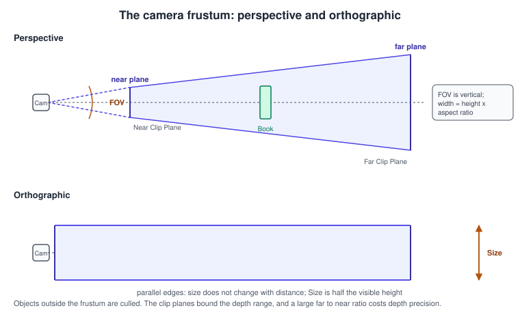
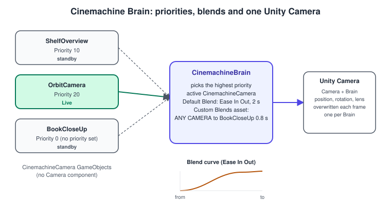
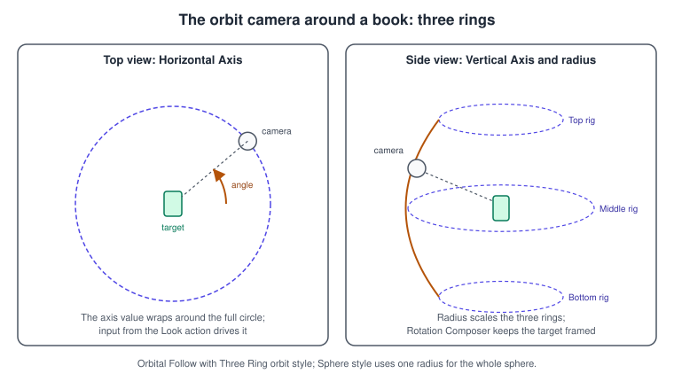
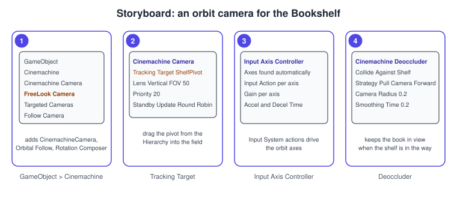

Cameras and Cinemachine
|
This content was generated with the assistance of AI and should be verified against the official documentation before being relied on in production. |
A camera decides what the player sees, and in a game about browsing a shelf of books it also decides how pleasant the browsing feels: how the view orbits the shelf, how it glides to a book that was picked, what happens when a bookcase gets between the camera and the book. Unity gives you two layers for this. The Camera component is the lens: it turns the 3D scene into a 2D image with a projection, a field of view and clip planes. Cinemachine is a package of procedural camera behaviors that moves that camera for you, with priorities, blends and collision avoidance, so most gameplay cameras need little or no camera code.
The facts were checked in November 2026 against the Unity 6.3 LTS manual (6000.3) and Cinemachine 3.1 (version 3.1.7 at the time of writing, the version in the Unity 6.3 package list). Unity 6.6 makes Cinemachine a core package. The examples run on every platform and use the Universal Render Pipeline (URP) 3D template with the Input System. In the running example this is the "Cinemachine orbit camera" step: a camera that orbits the shelf with the pointer, blends to a close-up when a book is picked, and shakes a little when a book hits the floor, working with the physics in 3D Physics and the actions of the Input System. The Bookshelf scene uses the shared bookshelf.glb model. The mathematics of projection (view and projection matrices, the frustum) is in Vectors, Matrices and Homogeneous Coordinates and Coordinate Spaces and Transforms; this page is the Unity-specific half.
The Camera component

Every camera is a GameObject with a Camera component. The scene has at least one, and you can have many. The component produces an image by projecting everything inside its view frustum, the truncated pyramid (perspective) or box (orthographic) bounded by the near and far clip planes. What is outside it is not drawn.
| Property | What it does |
|---|---|
Projection |
Perspective makes distant objects smaller, as a real lens does; it is the default for 3D games. Orthographic removes perspective and is used for 2D games, maps, isometric views and UI-like overlays. Fog is rendered uniformly in orthographic mode. |
Field of View |
The vertical angle of the frustum in degrees for a perspective camera. The horizontal angle follows from the aspect ratio. Values around 60 to 75 are typical for first and third person; 30 to 40 gives the "telephoto" look suited to a book close-up. |
Size |
For an orthographic camera, half the height of the view in world units ( |
Physical Camera |
Replaces the field of view with the real-world settings of a camera: focal length, sensor size, lens shift and gate fit. Use it for cinematic work and when matching footage. |
Clipping Planes |
Near and Far. Geometry closer than Near or farther than Far is clipped. The depth buffer has finite precision, so a huge Far-to-Near ratio produces z-fighting; use the largest Near and smallest Far that the scene allows. |
Viewport Rect |
The part of the screen the camera renders to, as a normalized rectangle. Two cameras with half-screen rects make a split screen. |
Depth (priority) |
Cameras render in increasing order; a camera with a higher value draws over a lower one. |
Culling Mask |
Which layers the camera renders. A viewmodel or a book inspection view can have its own layer and camera. |
Output Texture ( |
Renders into a Render Texture instead of the screen: security monitors, a mirror, a minimap, a book preview. |
Occlusion Culling and Dynamic Resolution |
Skip hidden objects (needs baked occlusion data) and scale the render resolution to hold the frame rate. |
In URP most of these are the same, and the Inspector adds Render Type (Base or Overlay), Renderer, post-processing and shadow toggles, and the Background Type in place of the Built-In Render Pipeline’s Clear Flags. The Built-In Render Pipeline is deprecated as of Unity 6.5, so new projects use the URP component.
Source: Manual: Introduction to cameras, Manual: Introduction to the camera view and Manual: Camera Inspector windows reference for URP
The size of the frustum at a distance
For a perspective camera with vertical field of view \( \theta \), the visible height at distance \( d \) is
\[ h = 2 \, d \, \tan \left( \frac{ \theta }{ 2 } \right) \qquad w = h \cdot a \]
where \( a \) is the aspect ratio (width divided by height). This is how you frame a shelf of known height: to fit a 2 metre shelf with a 60 degree field of view, put the camera about 1.73 metres back from it. Keep this in mind when you change the field of view for a zoom: it changes the framing as well as the perspective, which is why a "dolly zoom" moves the camera while it changes the field of view.
Oblique, physical and other special views
An oblique frustum (set through Camera.projectionMatrix or CalculateObliqueMatrix) skews the near plane, which is how water reflections clip everything below the surface. A Physical Camera with Lens Shift offsets the
lens from the sensor and reframes the image without tilting, so an architectural view keeps vertical lines vertical. Gate Fit decides what happens when the sensor and screen aspect ratios differ.
Screen, viewport and world space
A point can be described in three spaces, and Camera converts between them:
| Space | Range | Conversion methods |
|---|---|---|
Screen |
Pixels. The lower left pixel is (0, 0); the upper right is (width minus 1, height minus 1). The |
|
Viewport |
Normalized: (0, 0) is the lower left of the camera’s viewport and (1, 1) the upper right; |
|
World |
Metres in the scene. |
|
ScreenPointToRay returns a world-space ray that starts on the near plane and passes through the pixel; it is how a pointer picks an object (BookPicker in the 3D Physics page). ScreenToWorldPoint needs the depth in z, and
returns a point on a plane parallel to the camera at that depth. In an orthographic camera the depth hardly matters, which is why 2D games get away with a single value.
Camera.main returns the first enabled camera with the MainCamera tag. Unity caches the tagged cameras, so the call costs about the same as a GetComponent; keep a reference when you use it every frame. It returns null if no enabled camera has the tag, which
is a common source of null reference errors when the camera is disabled during a scene change.
Source: Scripting API: Camera.ScreenPointToRay, Scripting API: Camera.WorldToViewportPoint and Scripting API: Camera.main
Is it in view?
To decide whether a book is in front of the camera (to pause a hover effect, to skip sound) you can test its bounds against the six frustum planes without a physics query:
using UnityEngine;
namespace Bookshelf.Cameras
{
/// <summary>Reports whether the renderer's bounds are inside the camera frustum.</summary>
[RequireComponent(typeof(Renderer))]
public sealed class FrustumVisibility : MonoBehaviour
{
[SerializeField] private Camera _camera;
private readonly Plane[] _planes = new Plane[6];
private Renderer _renderer;
public bool IsInView { get; private set; }
private void Awake()
{
_renderer = GetComponent<Renderer>();
if (_camera == null)
{
_camera = Camera.main;
}
}
private void Update()
{
GeometryUtility.CalculateFrustumPlanes(_camera, _planes);
IsInView = GeometryUtility.TestPlanesAABB(_planes, _renderer.bounds);
}
}
}Source: Scripting API: GeometryUtility.CalculateFrustumPlanes and Scripting API: GeometryUtility.TestPlanesAABB
The planes array is allocated once and reused, so the test does not create garbage. The test is conservative: it says "in view" if the bounding box touches the frustum, even when the object itself is hidden behind another. (Renderers already have isVisible, which tells you whether any camera drew them, and
occlusion culling goes further.)
Multiple cameras
More than one camera is normal: a main camera, a minimap, a book inspector, a mirror, a UI camera. The options:
-
Depth and viewport. Cameras draw in
depthorder into their viewport rectangles; a higher-depth camera draws after, and so over, the lower one. Viewport rects make split screens. -
Render Textures. A camera whose
targetTextureis set draws into a texture that you put on a material or a UI image. -
URP camera stacking. In URP a Base camera renders the scene and any number of Overlay cameras render on top of it into the same target, in the order of the Base camera’s Camera Stack. An Overlay camera does not clear colour, so it composes with the Base camera’s image, and can clear depth so that its objects are never hidden by the world (a held book that must not poke through the shelf). Overlay cameras cost another culling and rendering pass, so use few.
-
Cinemachine. Do not add more Unity cameras for different shots. One Unity camera, controlled by many CinemachineCameras, is the Cinemachine pattern.
using UnityEngine;
using UnityEngine.Rendering.Universal;
namespace Bookshelf.Cameras
{
/// <summary>Adds an overlay camera to the base camera's stack, on top of the scene.</summary>
public sealed class InspectOverlay : MonoBehaviour
{
[SerializeField] private Camera _baseCamera;
[SerializeField] private Camera _overlayCamera;
private void OnEnable()
{
UniversalAdditionalCameraData overlayData = _overlayCamera.GetUniversalAdditionalCameraData();
overlayData.renderType = CameraRenderType.Overlay;
UniversalAdditionalCameraData baseData = _baseCamera.GetUniversalAdditionalCameraData();
if (!baseData.cameraStack.Contains(_overlayCamera))
{
baseData.cameraStack.Add(_overlayCamera);
}
}
private void OnDisable()
{
if (_baseCamera != null)
{
_baseCamera.GetUniversalAdditionalCameraData().cameraStack.Remove(_overlayCamera);
}
}
}
}A hand-written orbit camera
Before Cinemachine, it helps to write the simplest orbit camera once, because it shows what Cinemachine automates. The camera lives at a point on a sphere around a target, the pointer changes the two angles, the scroll wheel changes the radius, and a sphere cast keeps the shelf from getting between the camera and the target.
using UnityEngine;
using UnityEngine.InputSystem;
namespace Bookshelf.Cameras
{
/// <summary>A minimal orbit camera: yaw, pitch, zoom and shelf avoidance.</summary>
public sealed class ManualOrbitCamera : MonoBehaviour
{
[SerializeField] private Transform _target;
[SerializeField] private InputActionReference _look; // Value action, Vector2 (pointer delta or stick)
[SerializeField] private InputActionReference _zoom; // Value action, Vector2 (scroll)
[SerializeField] private LayerMask _obstacles;
[SerializeField, Min(0.5f)] private float _distance = 3f;
[SerializeField] private Vector2 _distanceRange = new Vector2(1f, 6f);
[SerializeField] private Vector2 _pitchRange = new Vector2(-10f, 70f);
[SerializeField, Min(0f)] private float _degreesPerUnit = 0.15f;
[SerializeField, Min(0f)] private float _zoomStep = 0.002f;
[SerializeField, Min(0f)] private float _smoothTime = 0.08f;
[SerializeField, Min(0.01f)] private float _collisionRadius = 0.2f;
private float _yaw;
private float _pitch = 20f;
private Vector3 _velocity;
private void OnEnable()
{
_look.action.Enable();
_zoom.action.Enable();
_yaw = transform.eulerAngles.y;
}
private void LateUpdate()
{
if (_target == null)
{
return;
}
Vector2 look = _look.action.ReadValue<Vector2>();
_yaw += look.x * _degreesPerUnit;
_pitch = Mathf.Clamp(_pitch - look.y * _degreesPerUnit, _pitchRange.x, _pitchRange.y);
float scroll = _zoom.action.ReadValue<Vector2>().y;
_distance = Mathf.Clamp(_distance - scroll * _zoomStep, _distanceRange.x, _distanceRange.y);
Vector3 pivot = _target.position;
Vector3 direction = Quaternion.Euler(_pitch, _yaw, 0f) * Vector3.back;
float distance = _distance;
if (Physics.SphereCast(pivot, _collisionRadius, direction, out RaycastHit hit,
_distance, _obstacles, QueryTriggerInteraction.Ignore))
{
distance = Mathf.Max(hit.distance, 0.2f);
}
Vector3 desired = pivot + direction * distance;
transform.position = Vector3.SmoothDamp(transform.position, desired, ref _velocity, _smoothTime);
Vector3 toTarget = pivot - transform.position;
if (toTarget.sqrMagnitude > 0.0001f)
{
transform.rotation = Quaternion.LookRotation(toTarget, Vector3.up);
}
}
}
}The camera moves in LateUpdate, after every Update and animation has moved the target, so it never lags a frame behind. A mouse delta is already "per frame" and a stick value is "per second", which is why a production
rig reads them differently (Cinemachine’s input controller has a Cancel Delta Time option for exactly this). This script is a good starting point; the Cinemachine version adds damping per axis, blends to other shots, shot quality and an obstacle strategy
without more code.
Cinemachine 3
Cinemachine is a package (com.unity.cinemachine) of procedural camera control. Version 3 is a major rewrite of version 2: the namespace is Unity.Cinemachine, the Virtual Camera is now the CinemachineCamera, and the old
fields lose their m_ prefix. Unity 6.3 uses Cinemachine 3.1; Unity 6.6 makes the package a core package.
The three essential elements

A working setup has exactly three kinds of element:
-
One Unity Camera (a GameObject with a
Cameracomponent). It is the only thing that renders. -
A Cinemachine Brain on that camera. It watches all active CinemachineCameras, chooses which one is live, and handles the transition (a cut or a blend) when the choice changes.
-
One or more CinemachineCameras. Each is a separate GameObject, not nested in one another and without a Camera component. They are placeholders for a shot: when one is live it overrides the Unity camera’s position, rotation, lens, post-processing profile and behavior over time.
Creating the first CinemachineCamera from the GameObject > Cinemachine menu adds a Brain to the Unity camera if it has none. CinemachineCameras are cheap, so a scene can hold dozens; a camera that is not live is in Standby (it keeps following its target and updating, which is what makes a blend smooth), and a camera whose GameObject is deactivated is disabled and costs nothing. Standby Update (Never, Always, Round Robin) tunes how often standby cameras update.
How the Brain chooses the live camera
Priority is an integer (default 0, negatives allowed). A higher value wins, and among equals the camera activated most recently wins. Both cameras of a blend stay live until it ends, so a camera you just deactivated can still be live for the blend duration.
To change shots in a game, change priorities or activate and deactivate GameObjects, as the ShelfCameraDirector below does; to choreograph a cutscene, use Timeline’s Cinemachine track, which ignores priorities (see Timeline and Cutscenes).
Behaviors: position, rotation and extensions
A CinemachineCamera has a Tracking Target (what to follow) and an optional Look At Target (what to aim at, if different), a Lens section that mirrors the Camera’s, and procedural behaviors added as components in three groups:
| Group | Component | What it does |
|---|---|---|
Position Control |
Follow |
Keeps an offset from the target with per-axis damping and a binding mode (Lock To Target, World Space, Lazy Follow and others). |
Orbital Follow |
Puts the camera on an orbit surface around the target, driven by a Horizontal, a Vertical and a Radial axis. The orbit style is Sphere (one radius) or Three Ring (top, middle and bottom orbits joined by a spline). The figure below shows both axes. |
|
Third Person Follow |
An over-the-shoulder camera with a rig and a camera collision, usually combined with Third Person Aim. |
|
Position Composer |
Places the camera so that the target sits at a chosen position on screen, with dead zones and soft zones; used for 2D and side views. |
|
Hard Lock To Target, Spline Dolly |
Locks to the target’s position, or moves along a spline. |
|
Rotation Control |
Rotation Composer |
Aims the camera at the target with a screen-space composition (dead zone, hard limits, lookahead) and damping. |
Pan Tilt, Hard Look At, Rotate With Follow Target, Third Person Aim |
Rotation from input angles, locked to the look at target, copied from the target, or aimed through the screen center. |
|
Noise |
Basic Multi Channel Perlin |
Adds handheld or vehicle shake from a noise profile. |
Extensions |
Deoccluder, Decollider, Confiner 2D and 3D, Impulse Listener, Free Look Modifier, Group Framing, Recomposer, Storyboard, Volume Settings |
Optional post-processing of the camera state: obstacle avoidance, keeping the camera inside a volume or polygon, reacting to impulses, tuning lens by vertical angle, framing a group of targets, and more. |
The menu entries combine these for you: GameObject > Cinemachine > Targeted Cameras > Follow Camera creates a camera with Follow and Rotation Composer, and GameObject > Cinemachine > FreeLook Camera creates Orbital Follow, Rotation Composer, an Input Axis Controller and an optional Free Look Modifier.

Cinemachine 3 has no separate FreeLook class. A FreeLook camera is a CinemachineCamera with Orbital Follow and an input controller. The alternative is Position Composer with Pan Tilt, where Pan Tilt sets the viewing angle and Position Composer frames the target on screen.
Procedure: an orbit camera for the Bookshelf

-
Open the Package Manager, find Cinemachine in the Unity Registry and install version 3.1 (Unity 6.6 and later include it as a core package). In the Hierarchy, create an empty GameObject named
ShelfPivotat the middle of the shelf; it is what the camera orbits. -
Choose GameObject > Cinemachine > FreeLook Camera. Unity adds a CinemachineCamera with Orbital Follow, Rotation Composer and Input Axis Controller, and a Cinemachine Brain on the Main Camera if it had none.
-
Select the new CinemachineCamera, rename it
OrbitCamera, and dragShelfPivotinto Tracking Target. Set Priority to 20 (enable the Priority And Channel option first) so that it wins over the other cameras. -
In Orbital Follow, choose the Three Ring orbit style and set the top, centre and bottom rings so the camera can look from above the shelf down to desk height; set the Radius (or the ring radii) so the whole shelf fits, using the formula above.
-
In the Input Axis Controller component, check that the Horizontal and Vertical axes are listed and point each Input Action at your Look action (and the Radial axis at a zoom action). Tune Gain and the acceleration and deceleration times.
-
Add the Cinemachine Deoccluder extension. Set Collide Against to the Shelf layer, choose the Pull Camera Forward strategy, and set a Camera Radius of about 0.2. Press Play and orbit the shelf: the camera now stays in front of the board that would otherwise hide the book.
The Deoccluder uses a physics raycaster, so the obstacles must have colliders on the layers you select, and there is a CPU cost; keep the layer list short.
Blends
When a different camera becomes live the Brain either cuts or blends. A blend is not a fade: it smoothly animates the Unity camera’s position, rotation and lens from one CinemachineCamera to the other, preserving the view of the target. How it is chosen:
-
The Brain looks in its Custom Blends asset (a Cinemachine Blender Settings asset) for an entry matching the pair. Entries name the From and To cameras (names, not references; the name
ANY CAMERAmatches any). The most specific entry wins. -
If none matches, the Default Blend of the Brain applies: a style (Cut, Ease In Out, Ease In, Ease Out, Hard In, Hard Out, Linear, Custom curve) and a time in seconds.
-
In Timeline, overlapping Cinemachine shots on the Cinemachine track define the blend by the size of the overlap.
-
A camera’s Blend Hint changes the algorithm, not the timing: spherical or cylindrical paths around the target, screen-space aiming, inheriting the current position, or freezing the outgoing camera.
-
CinemachineCore.GetBlendOverridelets code override any blend at run time.
The Bookshelf camera scripts
ShelfCameraDirector: change shots by priority
using Unity.Cinemachine;
using UnityEngine;
namespace Bookshelf.Cameras
{
/// <summary>Switches between the overview, orbit and close-up cameras by priority.</summary>
public sealed class ShelfCameraDirector : MonoBehaviour
{
[SerializeField] private CinemachineBrain _brain;
[SerializeField] private CinemachineCamera _overview;
[SerializeField] private CinemachineCamera _orbit;
[SerializeField] private CinemachineCamera _closeUp;
[SerializeField, Range(10f, 60f)] private float _closeUpFieldOfView = 30f;
[SerializeField, Min(0f)] private float _blendSeconds = 0.8f;
private void Awake()
{
// Default Blend of the Brain: the style and time used when no custom blend matches.
_brain.DefaultBlend = new CinemachineBlendDefinition(
CinemachineBlendDefinition.Styles.EaseInOut, _blendSeconds);
ShowOrbit();
}
public void ShowOverview() => Activate(_overview);
public void ShowOrbit() => Activate(_orbit);
public void FocusBook(Transform book)
{
_closeUp.Target.TrackingTarget = book;
_closeUp.Lens.FieldOfView = _closeUpFieldOfView;
Activate(_closeUp);
}
private void Activate(CinemachineCamera live)
{
_overview.Priority = live == _overview ? 20 : 0;
_orbit.Priority = live == _orbit ? 20 : 0;
_closeUp.Priority = live == _closeUp ? 20 : 0;
}
}
}Priority is a PrioritySettings struct that converts implicitly from an int (and enables itself); Target and Lens are public struct fields, so they can be assigned in place. The director does not move any camera: it only says which one is live,
and the Brain does the blend.
BookImpactShake: a camera nudge from physics
using Bookshelf.Gameplay;
using Unity.Cinemachine;
using UnityEngine;
namespace Bookshelf.Cameras
{
/// <summary>Sends a Cinemachine impulse when a book hits something hard.</summary>
[RequireComponent(typeof(CinemachineImpulseSource))]
public sealed class BookImpactShake : MonoBehaviour
{
[SerializeField] private BookBody[] _books;
[SerializeField, Min(0.1f)] private float _speedForFullShake = 6f;
private CinemachineImpulseSource _source;
private void Awake()
{
_source = GetComponent<CinemachineImpulseSource>();
}
private void OnEnable()
{
foreach (BookBody book in _books)
{
book.Impact += OnImpact;
}
}
private void OnDisable()
{
foreach (BookBody book in _books)
{
if (book != null)
{
book.Impact -= OnImpact;
}
}
}
private void OnImpact(BookBody book, float speed)
{
float force = Mathf.Clamp01(speed / _speedForFullShake);
_source.GenerateImpulseWithForce(force);
}
}
}The shake needs both ends: this Impulse Source generates a signal (its Impulse Definition chooses the shape, duration and amplitude), and a Cinemachine Impulse Listener extension on the CinemachineCamera turns the signal into camera motion, filtered by channel.
The BookBody and its Impact event are defined in the 3D Physics page.
OrbitAxisDriver: drive the orbit from code
using Unity.Cinemachine;
using UnityEngine;
namespace Bookshelf.Cameras
{
/// <summary>Sets the orbit angles from code, for example to face the front of a book.</summary>
[RequireComponent(typeof(CinemachineOrbitalFollow))]
public sealed class OrbitAxisDriver : MonoBehaviour
{
private CinemachineOrbitalFollow _orbital;
private void Awake()
{
_orbital = GetComponent<CinemachineOrbitalFollow>();
}
/// <summary>Turns the camera to look at the front of a target whose forward is given.</summary>
public void FaceFront(Vector3 targetForward)
{
// Horizontal Axis is a rotation about the up vector, in degrees.
float yaw = Mathf.Atan2(-targetForward.x, -targetForward.z) * Mathf.Rad2Deg;
_orbital.HorizontalAxis.Value = yaw;
}
public void SetZoom(float radialScale)
{
// Radial Axis scales the orbit radii; clamp to its Range.
Vector2 range = _orbital.RadialAxis.Range;
_orbital.RadialAxis.Value = Mathf.Clamp(radialScale, range.x, range.y);
}
}
}The axes are public fields of type InputAxis, a struct with Value, Range, Center, Wrap and recentering settings. The sign and the zero of the angle depend on the binding mode and the axis Center, so adjust the formula to your rig.
CameraEventLogger: react to shot changes
using Unity.Cinemachine;
using UnityEngine;
namespace Bookshelf.Cameras
{
/// <summary>Logs shot changes and finished blends, as a base for HUD or audio reactions.</summary>
public sealed class CameraEventLogger : MonoBehaviour
{
private void OnEnable()
{
CinemachineCore.CameraActivatedEvent.AddListener(OnCameraActivated);
CinemachineCore.BlendFinishedEvent.AddListener(OnBlendFinished);
}
private void OnDisable()
{
CinemachineCore.CameraActivatedEvent.RemoveListener(OnCameraActivated);
CinemachineCore.BlendFinishedEvent.RemoveListener(OnBlendFinished);
}
private static void OnCameraActivated(ICinemachineCamera.ActivationEventParams evt)
{
string from = evt.OutgoingCamera != null ? evt.OutgoingCamera.Name : "none";
Debug.Log($"Shot change: {from} to {evt.IncomingCamera.Name} (cut: {evt.IsCut})");
}
private static void OnBlendFinished(ICinemachineMixer mixer, ICinemachineCamera camera)
{
Debug.Log($"Blend finished on {camera.Name}");
}
}
}Cinemachine events are global through CinemachineCore and carry every camera and brain; the Cinemachine Camera Events and Cinemachine Brain Events components filter them for one object and expose Unity Events for the Inspector.
Input, 2D and groups
-
Input. Cinemachine cameras do not read input themselves; they expose axes. The Input Axis Controller finds the axes of the sibling components (Orbital Follow, Pan Tilt and others) and drives them with the Input System (or the legacy Input Manager), with gain, acceleration and deceleration, and an option to ignore input while a blend is running. For several local players, or for custom control such as a touch slider, derive from
InputAxisControllerBaseand read aPlayerInput. -
2D. Use an orthographic Unity camera and a CinemachineCamera with Position Composer, add the Confiner 2D extension with a polygon to keep the view inside the level, and Pixel Perfect for pixel-art games. The confiner is a physics-free polygon test; see 2D Games and 2D Physics.
-
Groups. A Cinemachine Target Group with Group Framing keeps several targets in view (two players, a book and the librarian).
-
Manager cameras. Clear Shot, State-Driven, Sequencer and Mixing cameras contain child cameras and decide among them by shot quality, an Animator state, a timed list, or a weighted mix.
The Editor’s camera tools
Unity 6 has a Cameras overlay in the Scene view that lists the cameras (including CinemachineCameras), lets you take first-person control of one while you move around the Scene view (with overscan guides that show more or less than the frustum), and works with Timeline and Animation camera authoring. It replaced the old Camera preview. Use it to compose a shot without leaving the Scene view.
Common mistakes
-
Two Unity cameras with a Brain, or a Brain on the wrong object. A Cinemachine setup has one Unity camera with one Brain; CinemachineCameras do not have Camera components.
-
Nesting CinemachineCameras. They must be independent GameObjects.
-
Priorities that are never lowered. Two cameras with the same high priority keep fighting; the most recently activated wins. Lower the old one when you raise the new one.
-
Moving the Unity camera by script while a Brain is on it. The Brain overwrites the transform every frame. Move a CinemachineCamera, or its target.
-
Camera.mainis null. There is no enabled camera tagged MainCamera. Tag it, cache the reference, and handle a missing one. -
Reading the pointer in the wrong space. A screen point is in pixels, a viewport point is normalized;
ScreenPointToRaytakes pixels, and aVector3input needszset forScreenToWorldPoint. -
Far clip too large. Z-fighting on the shelf boards; raise Near instead of lowering precision.
-
A Deoccluder with no colliders on the obstacles. It uses raycasts, so it sees only colliders on the chosen layers.
-
Following a Rigidbody with an Update-driven camera. The camera jitters. Interpolate the Rigidbody (see 3D Physics) and leave the Brain’s Update Method on Smart Update, the recommended setting.
-
Using old Cinemachine 2 names.
CinemachineVirtualCamera,m_Followand theCinemachinenamespace are gone; the namespace isUnity.Cinemachine. The upgrade guide lists the renamed components. -
Mouse input scaled by
deltaTime. A mouse delta is already per frame; scaling it makes the camera slower at high frame rates (use Cancel Delta Time for such inputs).
Performance notes
-
Each CinemachineCamera is cheap, but standby cameras still update; use Standby Update to set Never or Round Robin for cameras that are rarely used, and deactivate the ones you do not need.
-
The Deoccluder and the Third Person Follow collision use physics queries; limit their layer masks and avoid per-frame allocations in your own camera scripts.
-
Extra Unity cameras are expensive, because each one culls and renders the scene again: avoid Overlay cameras and Render Texture cameras that are not needed, lower the render texture resolution, and disable cameras that are not visible.
-
Use occlusion culling and the camera’s Culling Mask to cut the work of a camera that sees only part of the scene, and keep Far no larger than necessary.
-
The Profiler and the Frame Debugger show each camera’s rendering pass (see Profiling and Optimization).
What changed recently
| Version | Change |
|---|---|
Unity 6.0 (2024) |
The Cameras overlay replaces the Camera preview in the Scene view, with first-person control of cameras and overscan. |
Cinemachine 3.0 and 3.1 |
A complete rewrite of Cinemachine 2: the namespace |
Unity 6.5 |
Built-In Render Pipeline is deprecated; the old accessor |
Unity 6.6 |
Cinemachine becomes a core package. |
Where the books are outdated
Only UIA (Unity in Action, third edition, Unity 2020.3 LTS) covers cameras, in chapters 2, 6 and 8, and none of the books covers Cinemachine; GDP (Game Development Patterns with Unity 2021) does not treat cameras.
| Book and chapter | What the book shows | What is current in Unity 6.3 LTS |
|---|---|---|
UIA (whole book) |
Unity 2020.3 LTS, Built-in Render Pipeline, legacy Input Manager |
Unity 6.3 LTS (and 6.6); URP is the default, and the Input System is installed by default. |
UIA ch. 2, 6 and 8 |
A hand-written first-person and orbit camera script reading |
Read look and zoom actions from the Input System, move the camera in |
UIA ch. 2, 6 and 8 |
|
|
UIA ch. 6 and 8 |
Camera effects built from several Unity cameras and Camera depth in the Built-In Render Pipeline |
Use a CinemachineCamera per shot with one Unity camera; where several cameras are necessary use URP camera stacking (Base and Overlay) or Render Textures. |
None of the books |
Cinemachine |
Cinemachine 3.1 as described here. |
See also
-
Coordinate Spaces and Transforms and Vectors, Matrices and Homogeneous Coordinates: view, projection and the frustum in general.
-
Rotations and Quaternions: why the orbit uses Euler angles for input and quaternions for the result, and gimbal lock.
-
The Rendering Pipeline: where the camera’s matrices are used.
-
3D Physics: raycast picking from the camera and Rigidbody interpolation.
-
2D Physics and 2D Games: the 2D follow camera.
-
Input System: the Look and Zoom actions.
-
Timeline and Cutscenes: the Cinemachine track.
-
URP in Depth: camera stacking and the renderer a camera uses.
-
XR Development: the XR Origin camera rig, which replaces a normal camera.
-
C# Scripting and the MonoBehaviour Lifecycle:
LateUpdateand the player loop.